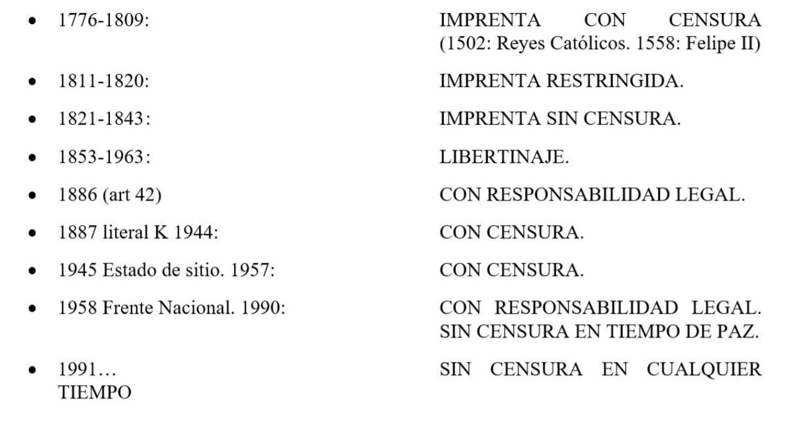

Introducción
La garantía de los derechos humanos se ha dinamizado lo suficiente en los últimos años y los países
latinoamericanos no es la excepción pues estos tienen la obligación sine qua non por medio de los distintos
tratados o convenios en los que están suscritos y que han sido ratificados por sus respectivos congresos de
protegerlos, pero sobre todo garantizarlos ante cualquier violación directa o indirecta ya sea por parte de
actores particulares o incluso del mismo Estado.
En el continente americano la constante lucha por distintas causas de desigualdad y represión social que se
han vivido a través de los siglos nos es pertinente destacar aquellas cuestiones tendientes a brindar
herramientas de protección al ejercicio de la libertad de prensa, en ese sentido, actualmente se puede
acotar la presencia de aproximadamente 34 organizaciones de carácter independiente ubicadas en las
diferentes regiones latinoamericanas encargadas de defender y promover la libertad de expresión y de prensa
como derecho fundamental consagrado en las distintas constituciones.
Dicho lo anterior, la libertad de prensa y de expresión son algunos de los pilares fundamentales en los
Estados democráticos toda vez que estos elementos amparados como derechos personales y colectivos brindan
prismas de imparcialidad e independencia bajo marcos de interpretación de responsabilidad social de los
medios y las comunidades como principales veedores de los gobiernos frente al movimiento de sus políticas,
conforme a lo anterior, Inés Pohl jefa de redacción de la agencia de noticias alemana Deutsche Welle -DW-
, sostiene que frente al caso de la Unión Europea que “la libertad de prensa no es negociable y que sin ella
no hay posibilidad de ser miembro de la UE” (Pohl, 2019).
En ese mismo sentido, la Comisión Interamericana de Derechos Humanos estableció la asistencia que tiene toda
persona de expresar
y difundir su pensamiento en sincronía con los demás pronunciamientos a nivel continental siempre y cuando
sus declaraciones, afirmaciones o comentarios se encuentren enmarcadas en los principios de objetividad,
veracidad e imparcialidad.
Las particularidades del ejercicio y las declaraciones constitucionales.
Como bien se dijo en líneas anteriores, los países de América Latina cuentan con robusta regulación frente a
las libertades individuales, con un articulado fuerte de protección de aquellos derechos que han sido
denominados como fundamentales y que los sistemas políticos están en cabal obligación de hacerlos cumplir,
así las cosas y en caso particular, Colombia tuvo grandes episodios para configurar lo que
constitucionalmente hoy existe en cuanto a la libertad de prensa, de opinión y expresión.
Frente a lo establecido en las líneas anteriores, se relacionan también los alcances por parte (i) de Antonio
Nariño como presidente de Cundinamarca en 1794 con la divulgación y publicación de la ya mencionada
Declaración del Hombre y del Ciudadano y (ii) Camilo Torres y Tenorio con el documento denominado
Representación del muy ilustre Cabildo de Santafé a la Suprema Junta Central de España o más comúnmente
denominado Memorial de agravios, documentos que sirvieron como insumos para la edificación constitucional de
Cundinamarca en el cual se estable por mandato superior la responsabilidad de los autores por sus escritos y
la libertad de la imprenta como derecho sagrado, se puede establecer un paralelo respecto de la libertad de
prensa, tomando lo evidenciado por el profesor Elker Buitrago López.
Libertad de prensa en el tiempo (López, Legislación de Prensa, 2007):

Acorde a lo anterior, con la voluntad del Constituyente de 1991 y la apertura al Estado liberal, democrático,
abierto pero sobre todo pluralista, estableció en el artículo 20 la garantía que tiene toda persona de
expresar libremente su pensamiento así como de difundirlo por medio de sus opiniones con la rigurosidad del
caso e información de carácter veraz e imparcial enmarcado por el respeto a la dignidad del semejante con
los compromisos éticos y de calidad de la profesión.
A pesar de estar reconocido por los tribunales externos y ser consagrado en la norma superior, la libertad de
oficio y el respeto por la vida, no se cumple en la gran parte del territorio colombiano, así frente a la
existencia y el derecho a la información Alonso Gómez Robledo sostiene que “si la libertad de expresión es
sin duda un fundamento esencial de todo orden democrático, es igualmente cierto que la protección de la vida
privada es garantía y condición de la vida democrática” (Verduzco, 1998).
Antonio Guterres actual secretario de General de las Naciones Unidas, establece que “cuando las
agresiones a los periodistas permanecen impunes, se envía un mensaje extremamente negativo: o sea, que
contar “verdades embarazosas” o expresar “opiniones indeseadas” podría poner en problemas a la gente común.
Además, la sociedad pierde así la confianza en su propio sistema judicial, cuyo deber es proteger a los
ciudadanos de cualquier agresión a sus derechos. Los autores de crímenes contra los periodistas son
alentados por el hecho de agredir a sus objetivos sin tener siquiera que dar cuentas a la justicia”
(Naciones Unidas).
Respectodeloanterior,aúnconelreconocimiento y la reglamentación internacional, el respeto por el ejercicio
del periodismo y de divulgación de información de interés general no llega a garantizarse en todo sentido,
en cifras del Observatory of killed journalist de las Naciones Unidas entre los años 2006 y 2019, en el
mundo fueron asesinados han sido asesinados 1453 periodistas por causas en muchas ocasiones no determinadas
pero siempre en función del ejercicio profesional, en América Latina a corte de junio la cifra ascendía a
345 (UNESCO, 2021). Las particularidades de nuestro contienente llaman la atención; desde 1995 a 2021 han
asesinado 341 periodistas, Argentina es es país donde este crimen tiene
la cifra mas baja con 1; Brazil 51 y México con 125 (siendo como ultimo registro el pasado 22 de junio del
corriente año).
Colombia no es ajena a este fenómeno, según el Centro Nacional de Memoria Histórica en informe presentado
junto con la Revista Semana en el 2016 (Centro Nacional de Memoria Historica, 2016), desde 1977 hasta 2015
se han presentado 153 asesinatos contra periodistas (hombres 145-mujeres 8) bajo diversas causas, la mayor
cantidad de muertes no registran informe de los perpetradores del crimen, llama la atención eso si, la gran
cantidad de crimenes relacionados con la corrupcióon política, el narcotrafico y el paramilitarismo.
La Fundación para la Libertad de Prensa -FLIP- entidad encargada defender la libertad de prensa y opinión en
Colombia miembro de la red mundial de periodistas en su informe anual de 2019 Callar y fingir LA CENSURA DE
SIEMPRE, desarrolla su contenido en 13 puntos uno de los más destacables-a juicio del autor- sin desconocer
la importancia de los demás, está el ver al periodista como un enemigo de la información veraz y objetiva
frente a los problemas que suscitan en las calles o en virtud de protestas sociales, pues estos son en gran
sentido reprimidos por presentar el conflicto.
Algunas conclusiones.
Los Estados bajo las recomendaciones de la Corte Interamericana de Derechos Humanos, ha determinado que la
libertad de expresión tiene varias dimensiones tales como derechos, deberes pero también obligaciones por
parte de quien ejerce la labor de informar, es de dejar claro que esta función no solamente corresponde a
quien esta investido por una función propia del periodismo pues como derecho fundamental involucra a toda la
sociedad como se ha venido decantando a lo largo de estas líneas, en ese sentido, la sociedad como base de
la democracia enaltece derecho informando,
expresando sus opiniones pero sobre todo haciendo un control de las atrocidades que se comenten día a día.
Los desafíos son muchos, ejercer la libertad de información con gobiernos que imponen censura es el reto a
vencer aun cuando sus legislaciones frente a la comunidad internacional digan lo contrario, los
pronunciamientos jurisprudenciales de las distintas cortes se abren camino en los Estados democráticos como
contrapeso al poder ejecutivo, el derecho a la información es de carácter público y en ese sentido los
Estados deben garantizarlo conforme se dinamizan las sociedades.
Diré para concluir que dentro de sus obligaciones para que este derecho constitucional sea una real garantía
y tenga la efectividad protectora se deben llevar procedimientos que permitan la satisfacción de los
derechos de acceso a la información, que sea sencillo, gratuito o de bajo costo y rápido (ii) debe promover
una promover una cultura de transparencia que implique campañas de divulgación para promover, implementar y
asegurar el derecho a la información; (iii) una implementación adecuada que permita el efectivo goce del
derecho (Chocarro, 2017), asi como una información objetiva como se ha venido decantando a traves del
presente ensayo y como parametros obligatorios de responsabilidad tanto civil como penal para aquellos que
rompan esa cadena de información transparente y de buena fe.
Referencias
Centro Nacional de Memoria Historica. (2016). especiales.semana.com/periodistas-asesinados/. Obtenido de
www.semana.com: https:// especiales.semana.com/periodistas-asesinados/
Cernuda, A. (s.f.). www.acernuda.com. Obtenido de https://acernuda.com/areopagitica-john-milton-libertad
Chocarro, S. (2017). Estándares internacionales de libertad de expresión: Guía básica para operadores
de justicia en América Latina. Estándares internacionales de libertad de expresión: Guía básica para operadores
de justicia en América Latina. Washintong, Estados Unidos: CIMA.
López, E. B. (2007). La libertad de prensa. En E. B. López, Derecho de la Comunicación (pág. 55). Bogotá:
Librería ediciones profesionales LTDA.
López, E. B. (2007). Legislación de Prensa. En E. B. López, Derecho de la Comunicación (págs. 55- 74).
Bogotá: Librería Ediciones del Profesional LTDA. Recuperado el 10 de Agosto de 2021
MUNRO, C. (1993). LA LIBERTAD DE PRENSA EN INGLATERRA: CÓMO LA BESTIA FUE
DOMADA. Revista de Administracióon Pública,
516.
Naciones Unidas. (s.f.). https://www.un.org/es Obtenido de
https://www.un.org/es/observances/end-impunity-crimes-against-journalists
Ornanización de las Naciones Unidas. (s.f.).
Naciones Unidas.
Pohl, I. (29 de 12 de 2019). Libertad de prensa, pilar de toda democracia. Berlín, Alemania.
UNESCO. (2021). Observatory of killed journalists.
Verduzco, A. G.-R. (1998). Protección de la "privacia" frente al Estado. En V. M. Martínez Bullé Goyri,
Diagnóstico genético y derechos humanos (págs. 92-93). Mexico: UNAM.
Página web
https://www.sipiapa.org/notas/1200131-ley-prensa-colombia-base-legal
http://www.cidh.org/countryrep/colom99sp/capitulo-8.htm#1
https://www.cidh.oas.org/annualrep/80.81sp/cap.5a.htm#LIMITACIONES%20A%20LA%20LIBERTAD%20DE%20EXPRESION%20E%20INFORMACION
https://www.misabogados.com.co/blog/que-es-la-libertad-de-prensa#:~:text=La%20libertad%20de%20prensa%20es,pueden%20informar%20a%20la%20poblaci%C3%B3n.
http://www.unesco.org/new/es/media-services/single-view-tv-release/news/main_organizations_for_the_defence_of_journalists/
https://ifex.org/es/members/
https://www.dw.com/escolobia-rechaza-pronunciamientos-externos-sin-objetividad/a-57468550
https://concepto.de/libertad-de-expresion/#:~:text=%C2%BFCu%C3%A1l%20es%20el%20origen%20de%20la%20libertad%20de%20expresi%C3%B3n%3F&text=A%20pesar%20de%20que%20el,los%20a%C3%B1os%20de%20la%20Ilustraci%C3%B3n.
https://twitter.com/AMARCALC
https://www.flip.org.co/index.php/es/
https://flip.org.co/index.php/es/publicaciones/informes-anuales/item/2666-el-periodismo-no-es-el-enemigo
https://flip.org.co/index.php/es/publicaciones/informes-anuales/item/2666-el-periodismo-no-es-el-enemigo
http://www.derecho.uba.ar/publicaciones/libros/pdf/la-cadh-y-su-proyeccion-en-el-derecho-argentino/013-scioscioli-pensamiento-y-expresion-la-cadh-y-su-proyeccion-en-el-da.pdf
https://www.sipiapa.org/contenidos/acerca-de-la-declaracion.html
https://www.dejusticia.org/wp-content/uploads/2008/07/Gu%C3%ADa-pr%C3%A1ctica-Cap%C3%ADtulo-I.pdf
http://www.oas.org/es/cidh/expresion/documentos_basicos/otros.asp
https://www.corteidh.or.cr/tablas/r37048.pdf
https://cerosetenta.uniandes.edu.co/libertad-de-prensa-en-america-latina/?ed=1
https://www.ifj.org/es
https://www.youtube.com/watch?v=pdIMhh2eiYo
https://www.sipiapa.org/contenidos/home.html
http://www.indicedechapultepec.com/colombia.html
http://www.indicedechapultepec.com/indice/9/informes.pdf
http://www.indicedechapultepec.com/indice/9/dofa.pdf
http://www.indicedechapultepec.com/indice/6/graficos.pdf
https://www.dw.com/es/empresa/qui%C3%A9nes-somos/s-31839
https://repository.ucatolica.edu.co/bitstream/10983/23183/1/El%20derecho%20a%20la%20libertad%20de%20prensa%20y%20de%20informaci%C3%B3n%20%286%29.pdf

 Docente Facultad de
Derecho ,
nicolas.guzman@ustamed.edu.co .
Docente Facultad de
Derecho ,
nicolas.guzman@ustamed.edu.co .
 ,
niversidad Santo Tomás, Sede Medellín, Antioquia, Colombia
,
niversidad Santo Tomás, Sede Medellín, Antioquia, Colombia